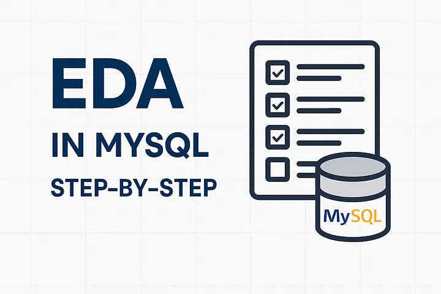
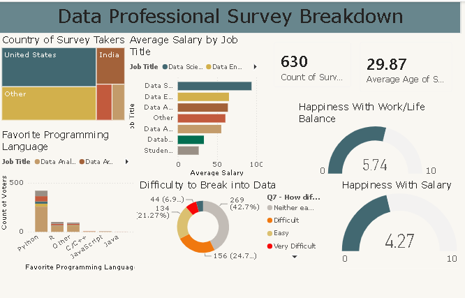
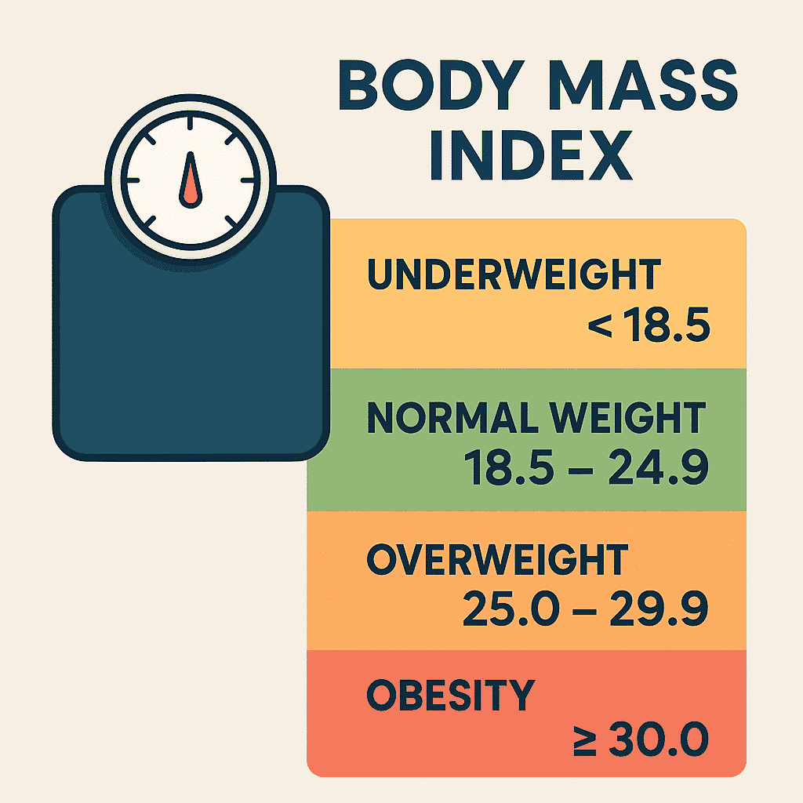
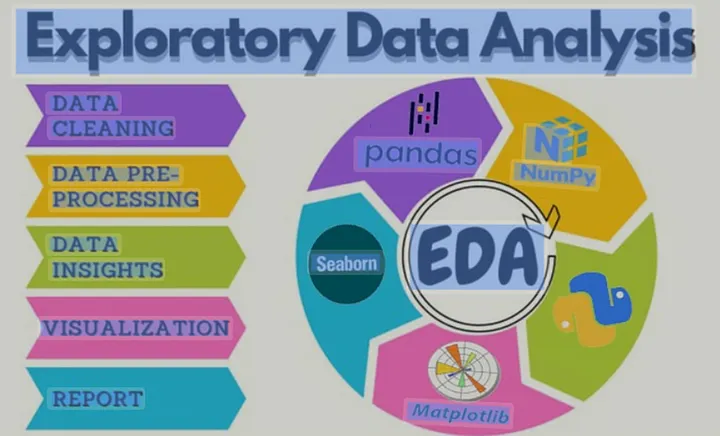

MySQL Data Cleaning: Tech Layoffs
End-to-end data cleaning and database optimization of tech industry layoffs using MySQL.
Data Analyst skilled in SQL, Tableau, PowerBI, and Python @AbhiTheAnalyst.
End-to-end data cleaning and database optimization of tech industry layoffs using MySQL.

Uncovering deep industry trends and tracking rolling layoffs timelines using advanced MySQL window functions and CTEs.
An interactive Tableau dashboard analyzing Airbnb pricing, revenue trends, and zip code metrics to uncover regional real estate insights.

An interactive Excel dashboard analyzing bike sales, customer demographics, and sales trends.

An interactive PowerBI dashboard analyzing data professional survey responses and industry insights.

Python script that calculates Body Mass Index (BMI) based on user weight and height inputs, classifying health metrics automatically.
An automated Python script connecting to a cryptocurrency API to pull live price data, track market changes, and log information automatically.
A handy file-management automation script that cleans up your local computer folders by scanning and sorting files into designated directories based on extension type.
A data collection web scraper built with Python that extracts product prices and details from Amazon pages, tracking price fluctuations over time.
A comprehensive Python project focused on data preprocessing and pipeline purification using Pandas.

An exploratory data project diving deep into structural datasets to uncover hidden trends, patterns, and statistical anomalies.
Jammu,
J&K, India